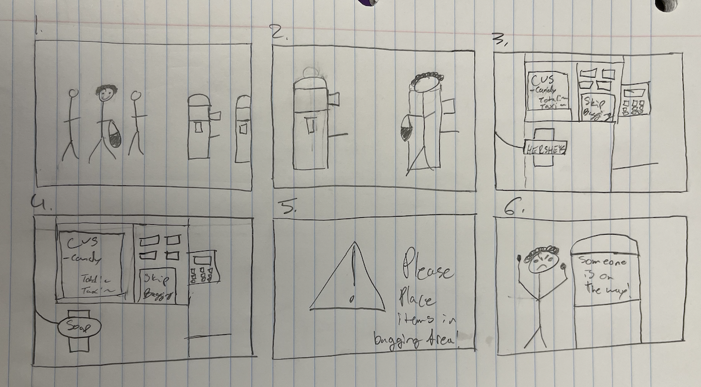

Welcome!
This is my personas and storyboarding project.
Here, you'll find my observations and interview questions, a brief summary of my interviews and some key takeaways from the experience.
In the second section, I'll dive into my personas and walk you through my storyboarding! For my project, I chose to focus on the checkout kiosks
at the Thayer CVS (illustrated below). Hope you enjoy~

The CVS Kiosk is a popular alternative to the normal human to human checkout we've grown accustomed to over the years. It's equipped with a touch screen
(composed of a virtual receipt on the left, and some helper buttons on the right illustrated above), a card reader, a bagging area, and an item scanner. While the interface
seems to have everything it needs, it leaves much to be desired by its users.
Getting Started
Inital Observations
- Seems largely intutive/no one was asking for help
- People prefer to go to the kiosk rather than the actual cashier
- Most people struggle with the final payment process
- People seem largely unaffected by the kiosks

Followup Questions
- Was the Kiosk easy to use?
- What could be improved?
- What do you like?
- Do you think it took less time than if someone just rang you up?
- How does the kiosk make you feel?
General Results
- The kiosk seemed to be largely appreciated
- Payment process was by far the most confusing aspect
- Too many intermediate steps (skip bagging prompt)
- Pretty easy to use right away despite some awkward prompts
- Bagging process felt a little unreliable (place items in bagging area)
Personas
The Family Weekend Mom
Betty is a mom visiting her kid on family weekend and has lots of errands to run!
she wants to get in and out of CVS fast so she can spend as much time with her child as
possible while still helping them fully settle into their new living space, but is a little
thrown off by the new CVS kiosks, especially as a new customer, and is prone to getting lost...

The Emwool Frequenter
Henry has practically ingrained his weekly CVS run to his central nervous system (a regular). He knows
what he needs, where to find it, and how to move through the kiosks quickly. Sometimes he moves
a little too quickly though, and can slow down the machine and himself...
Storyboard

- Henry has grabbed his items, put them in his own bag, and is ready to go
- Henry steps up to the kiosk
- Henry scans his items like he usually does, but doesn't press the skip bagging button
- Henry tries to scan another time but is unable to because he missed the prompt from the last frame
- An error pops up on the screen
- Henry has to wait for someone to come help him
Above is a storyboard of Henry's most recent, and pretty frustrating, CVS run. He grabbed his items as usual, but
didn't press the skip bagging button before going to scan another item. This can sometimes freeze the machine. As a
result, he was unable to get his items in a timely manner, and he needed to wait for one of the cashiers to fix the machine. (In order to keep the storyboard clean
and concise, I put a list above to point out more directly what is happening)
THANKS!!!!